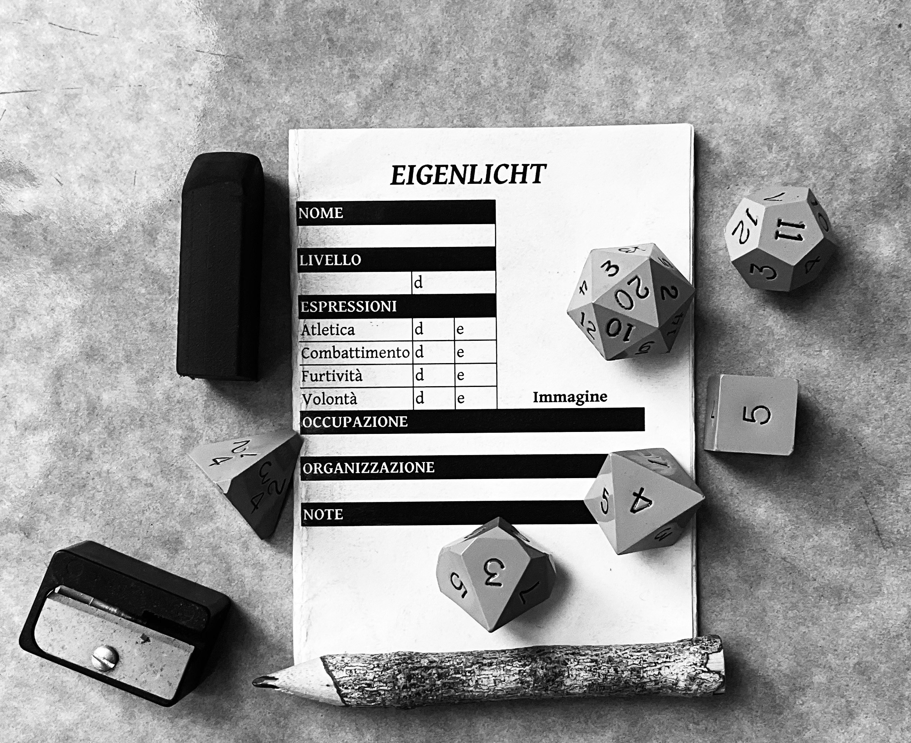

Questo è un gioco di ruolo analogico che enfatizza meccaniche minimali e massima fiducia al tavolo e che, per dirimere le situazioni di incertezza in modo equo e verosimile (“verosimile” rispetto al mondo di gioco concordato), si basa sull’operato di una persona che fa da arbitro imparziale.
Per esempio, se nel vostro mondo condiviso esiste la magia è importante che ogni partecipante lo capisca e sia d’accordo su come essa funzioni o sia disponibile a lasciare l’ultima parola all’arbitro.
Un’ambientazione condivisa, un po’ di materiale di cancelleria per prendere appunti e dadi poliedrici: d4, d6, d8, d10, d12 e d20.
Per giocare in modalità “solitario” non serve altro! Altrimenti, raduna un po’ di persone dal tuo giro di amicizie e date inizio al divertimento!
Le sessioni dovrebbero avere luogo in un posto tranquillo, dove sia possibile concentrarsi e ascoltarsi, e l’atmosfera deve essere inclusiva.
Snack e bevande a piacere!
Con più partecipanti, una persona deve giocare come arbitro, facendo così da tramite tra il mondo di gioco e i personaggi principali, quelli creati dalle altre persone partecipanti. In modalità “solitario”, invece, sei responsabile sia delle azioni del tuo personaggio principale che dell’interpretazione delle reazioni del mondo.
Un personaggio principale è caratterizzato da quattro espressioni: atletica, combattimento, furtività e volontà. Ciascuna va legata a un dado espressione: all’inizio, vanno assegnati due d4, un d6 e un d8 (più facce ha un dado e meglio è).
Un simile personaggio ha poi un livello da 1 a 10: più è alto il suo livello e più quel personaggio è in qualche modo potente. Ogni livello dà un dado livello: d4 dal 1° al 3°, d6 dal 4° al 6°, d8 dal 7° al 9° e d10 al 10°.
Vanno quindi decise un’occupazione, ossia la sua professione o attività, e un’organizzazione a cui legarlo e da cui può trarre supporto e contatti.
Infine, va dotato di un nome che sia esteticamente appropriato con il mondo di gioco.
Il flusso di gioco si articola più o meno così:
L’arbitro prepara la scena, descrivendo apparenza fisica e condotta dei personaggi presenti che non sono mossi dalle altre persone al tavolo, oltre a ogni fattore che potrebbe aiutare queste ultime nelle loro scelte. Chi vuole fa domande chiarificatrici e, raggiunta una comprensione condivisa, l’arbitro chiede qualcosa del tipo: «Che fate?»
A turno, chi non gioca come arbitro esplicita le intenzioni del proprio personaggio e cosa vorrebbe cambiare “qui e ora” e l’arbitro decide l’ordine di risoluzione delle azioni, narrandone gli esiti.
In gioco, i personaggi principali potrebbero prendere condizioni fisiche o mentali: hanno un peso diegetico e sono cancellabili solo ricorrendo alle appropriate modalità di recupero.
Se il proprio personaggio ha una o più condizioni attive, i tiri pertinenti saranno penalizzati. La 5a e ultima condizione è sempre “a pezzi”, che rompe la “plot armor” (“armatura narrativa”) del personaggio rendendolo prono alla morte e incapace di fare alcunché senza aiuto.
L’avanzamento è tracciato con l’acquisizione di beni materiali e relazioni sociali e con la “crescita” dei dadi espressione e dei dadi livello.
Se fallisci un tiro per un’azione rischiosa, il tuo personaggio commette un errore (e) collegato all’espressione usata. A 10 errori (e10) il conteggio ritorna a 0 errori (e0): quand’è così, tira il dado espressione di quell’espressione e se ottieni un risultato superiore alle sue facce, quel dado “cresce” di una taglia: d4 › d6 › d8 › d10.
Il dado livello, invece, “cresce” in automatico di una taglia alla fine di ogni arco narrativo.
Per scrivere uno scenario da portare in gioco si possono sviluppare i cinque punti qui in basso rispettando i canoni estetici dell’ambientazione:
+---------------+-------+---------------+
| Oasi | (1 ora di cammino) | Sorgente |
| (villaggio) |-------| (pozzo) |
+---------------+-------+---------------+
Le azioni prive di rischio o di opposizione hanno luogo liberamente ed è consentito ricorrere a un’attenta pianificazione e al posizionamento narrativo per eliminare totalmente gli ostacoli.
Tuttavia, quando resta una chance di fallire o un personaggio che non è mosso dall’arbitro affronta un conflitto diretto, chi muove quel personaggio deve tirare due dadi per determinare l’esito della sua azione: uno è il dado espressione dell’espressione stabilita dall’arbitro in base a una sua valutazione della situazione e l’altro è il dado livello stabilito dal livello del personaggio.
L’arbitro potrebbe decidere, viste le circostanze, che un personaggio abbia un vantaggio o uno svantaggio in virtù della sua occupazione, dell’organizzazione a cui è legato o di altri fattori situazionali: se è così, al tiro andrà applicato un modificatore, rispettivamente un +2 in caso di vantaggio o un -2 in caso di svantaggio.
Risolte tutte le azioni, le persone interessate prendono nota dei cambiamenti avvenuti nei personaggi e/o nell’ambiente e si riparte da capo.
Il totale del tiro determina l’esito dell’azione:
Con un 6- o un 7-9 va aggiunta una complicazione, da scegliere direttamente o a caso con un d20:
| 1-5 | 6-10 | 11-15 | 16-20 |
|---|---|---|---|
| Frapponi una scelta | Consuma una risorsa | Palesa una avversità | Infliggi del danno |
Per affidare una risposta alla sorte, tirare un d12:
| 1-2 | 3-4 | 5-6 | 7-8 | 9-10 | 11-12 |
|---|---|---|---|---|---|
| No e | No | No, ma | Sì, ma | Sì | Sì e |
Una scheda del personaggio è inclusa nell'ultima release del gioco.
Francesco Catenacci – 2025 – CC BY-NC-SA 4.0. V0.4 (25.01.2025) scritta con Nextcloud Office.
Basato su Journeyman di Zac Bir.
PDF PocketMod creato con PocketMod Creator di Callum Mullins.
Repository clonato da microsr di Bruno Bord.
Eigenlicht - Gioco di ruolo analogico - Creative Commons Attribuzione - Non commerciale - Condividi allo stesso modo 4.0 Internazionale